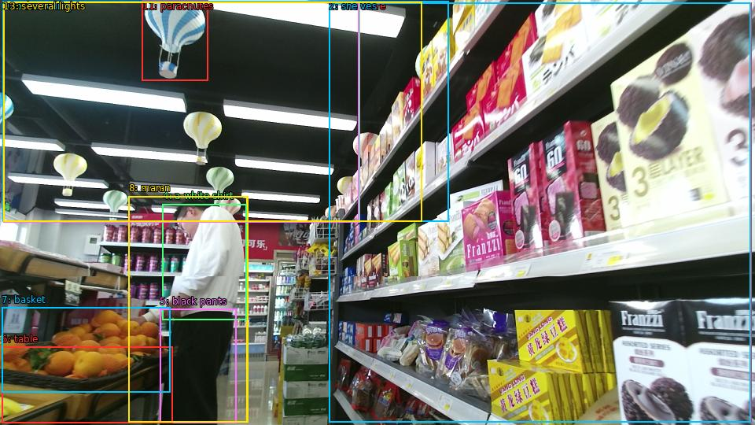

The image shows the interior of a grocery store. The store appears to be well-stocked with various items for sale. On the right side of the image, there are shelves stocked with different types of snacks and drinks. In the foreground, there is a man wearing a white shirt and black pants, standing in front of a table with a basket of oranges. He is looking down at the items on the table. Above the man, there hangs a bunch of colorful hot air balloons in the shape of parachutes. The ceiling is black and there are several lights hanging from it. The overall atmosphere of the store is bright and cheerful.

Original · Caption raw · Grounding raw · Koordinate
Številke so lokalni ID regije. Dolge slikovne oznake so skrajšane; spodaj so celotne fraze. Napovedane regije se lahko prekrivajo ali opisujejo skupine.
| ID | Celotna fraza | bbox xyxy |
|---|---|---|
| 1 | The store | [418.0799865722656, 3.510000228881836, 955.6799926757812, 536.4900512695312] |
| 2 | shelves | [418.0799865722656, 3.510000228881836, 954.719970703125, 536.4900512695312] |
| 3 | a man | [163.67999267578125, 249.2100067138672, 314.3999938964844, 536.4900512695312] |
| 4 | a white shirt | [206.87998962402344, 259.4700012207031, 313.44000244140625, 406.3500061035156] |
| 5 | black pants | [203.0399932861328, 392.8500061035156, 300.0, 537.030029296875] |
| 6 | table | [2.3999998569488525, 440.9100036621094, 219.36000061035156, 537.5700073242188] |
| 7 | basket | [2.3999998569488525, 390.69000244140625, 216.47999572753906, 498.6900329589844] |
| 8 | man | [163.67999267578125, 249.2100067138672, 315.3599853515625, 536.4900512695312] |
| 9 | bunch | [4.319999694824219, 2.430000066757202, 457.44000244140625, 282.69000244140625] |
| 10 | air balloons | [4.319999694824219, 2.430000066757202, 456.47998046875, 282.69000244140625] |
| 11 | parachutes | [180.95999145507812, 0.8100000619888306, 264.47998046875, 102.87000274658203] |
| 12 | The ceiling | [3.359999895095825, 1.8900001049041748, 570.719970703125, 281.6100158691406] |
| 13 | several lights | [4.319999694824219, 2.430000066757202, 536.1599731445312, 281.6100158691406] |